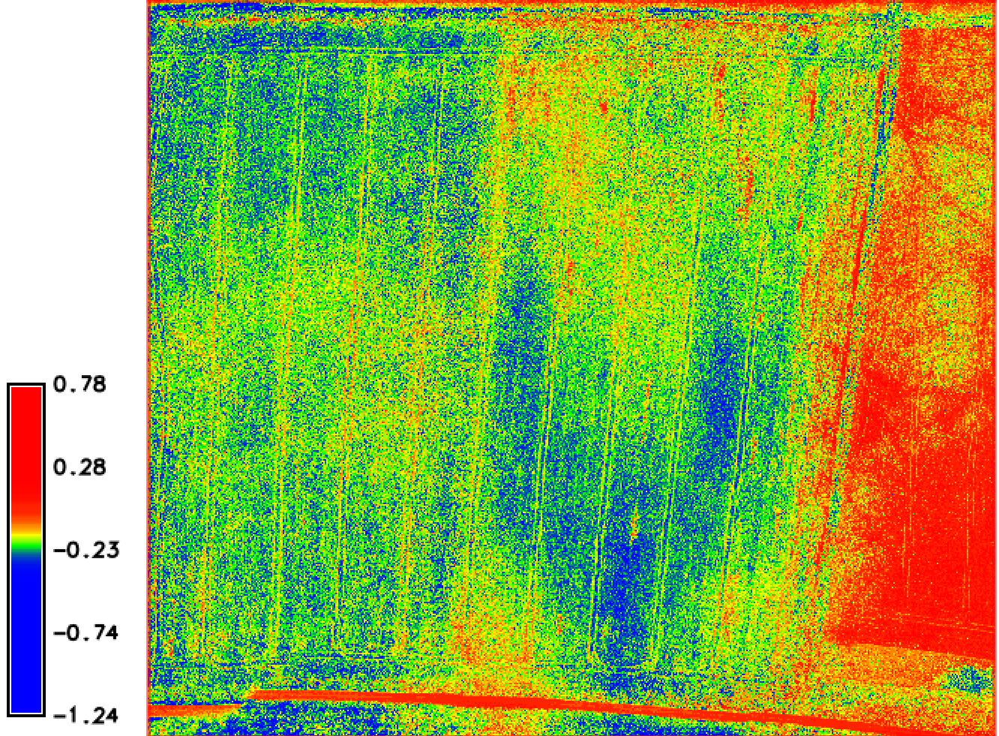

Multispectral imagery analysis
GIS/MEA 584 Mapping and Analysis Using UAS
Objectives
- Understand electromagnetic spectrum
- Recognize differences between visual spectrum and multispectral sensors
- Understand spatial bands in drone cameras
- Utilize photogrammetric software for processing of multispectral imagery
- Understand the advantages of using Vegetation Indices
Visible spectrum – RGB cameras
- The human eye is sensitive only to wavelengths between 400 and 700 nm, which is known as the visible spectrum. Humans can perceive a variety of colors ranging from violet to red. Wavelengths however can also be shorter (ultraviolet) or longer (infrared) than those of our visible eyesight.
- Even though we cannot see them, these invisible wavebands are very indicative of the agronomic characteristics of soil, plants and crops.
- Short movie
Electromagnetic spectrum
source: https://www.gisnote.com/wp-content/uploads/2019/04/image-result-for-electromagnetic-spectrum-micasens.jpeg
Multispectral sensors
- Advances in multispectral sensors for drones have led to a rapid growth in their use for capturing not only visible spectra (e.g., red, green, and blue bands, hereafter referred to as RGB but also bands outside the visible spectra such as near-infrared (NIR) and red-edge (REG) channels (the red edge is located between the red and NIR portions of the electromagnetic spectrum).
- Multispectral sensors flown onboard UAS provide data that are spectrally similar to imagery captured from satellites and manned aircraft – putting a very powerful tool into the hands of users.
Generating a reflectance map from a multispectral drone
- The at-sensor reflectance (i.e., radiance), which is the radiant flux received by the sensor, is a function of the surface radiance and the atmospheric disturbance between the surface and the sensor.
- This can be calibrated by a reflectance standard to an absolute reflectance signature stored as numeric digital number values in the image. The output is a reflectance map/imagery with multiple bands
Generating a reflectance map from a multispectral drone

“Fundamentals of capturing and processing drone imagery and data” FIGURE 17.1
Multispectral drone cameras
Jeziorska, J. UAS for Wetland Mapping and Hydrological Modeling. Remote Sens. 2019, 11, 1997. https://doi.org/10.3390/rs11171997
Multispectral drone cameras
- Jeziorska, J. UAS for Wetland Mapping and Hydrological Modeling. Remote Sens. 2019, 11, 1997. https://doi.org/10.3390/rs11171997.
Green band
- corresponds to the reflected energy in the 500 to 600 nm spectral band and has the greatest reflectance of a plant in this band. The reflectance peak is at around 550 nm. It has been proven that this spectral band is strongly correlated with the amount of chlorophyll contained in the plant.
- In this visible portion of the vegetation spectrum, the reflectance curve of a healthy plant exhibits the greatest reflectance in a green waveband (in the range of 550 nm). This is why plants appear green to us.
- IA chemical compound in leaves called chlorophyll strongly absorbs radiation in the red and blue wavelengths but reflects green wavelengths. Leaves appear “greenest” to us in the summer, when chlorophyll content is at its maximum.
Red band
- Corresponds to the reflected energy in the 600 – 700 nm spectral band. The strong chlorophyll absorption in this band results in a low reflectance. Reflectance varies significantly in relation to factors such as biomass, LAI (Leaf Area Index), soil history, crop type, humidity and plant stress.
- For most crops this band gives an excellent contrast between the plants and the soil and it is extensively used for compiling most of the vegetation indices in agriculture.
Red Edge
- This a very narrow band (700 – 730 nm), which corresponds to the entry point of Near Infrared. It is the point of sudden change in reflectance, from strong absorption of Red to substantial reflection of Near Infrared. This band is very sensitive to plant stress and provides information on the chlorophyll.
NIR (Near-Infrared)
- Corresponds to the wavelengths in the 700 nm to 1.3 µm range, has the strongest reflectance of the bands studied. There is a very strong correlation between this reflectance and the level of chlorophyll in the plant. A highly significant variation of the reflectance in this band is produced when a plant is under stress.
- Healthy vegetation absorbs blue and red-light energy to fuel photosynthesis and create chlorophyll. A plant with more chlorophyll will reflect more near-infrared energy than an unhealthy plant. Thus, analyzing a plants spectrum of both absorption and reflection in visible and in infrared wavelengths can provide information about the plants’ health and productivity.
NIR (Near-Infrared)
- Along with the Red spectral band, infrared is extensively used for compiling most of the vegetation indices in agriculture
- NIR is sensitive to the leaf cellular structure and provides critical data to monitor changes in crop health.
- Soil property and moisture analysis
- Crop health and stress analysis
- Water management
- Erosion analysis
- Plant counting
Benefits Of Multispectral Imaging
- Identify pests, disease and weeds. Optimize pesticide usage and crop sprays through early detection.
- Provide data on soil fertility and refine fertilization by detecting nutrient deficiencies. Help with land management and whether to take agriculture land in or out of production or rotate crops etc.
- Count plants and determine population or spacing issues.
- Estimate crop yield.
Benefits Of Multispectral Imaging
- Measure irrigation. Control crop irrigation by identifying areas where water stress is suspected. Then, make improvement to land areas such as install drainage systems and waterways based on the multispectral data.
- View damage to crops from farm machinery and make necessary repairs or replace problematic machinery.
- Survey fencing and farm buildings.
- Monitor livestock. Now, drones with thermal cameras can be used to locate livestock at night time along with plenty of other uses.
Processing of multispecral drone imagery
Radiometric calibration
- The calibration is carried out by manually selecting the area of the reflectance target on the calibration image and assigning the known reflectance value of the target
Calibration images can be collected before, after, or during the flight. For pre- and post-flight calibration, drone and sensor are held manually above the target and images for all bands are acquired
Vegetation indices
- Reflectance maps can be used to calculate a variety of spectral indices. Spectral indices are a form of image enhancement where the bands are mathematically combined or transformed to permit better interpretation of the information in the image.
- Since the 1970s, many indices have been developed for different scientific purposes. The most common spectral indices are vegetation indices (VIs) that highlight the biophysical characteristics of the vegetation and are sensitive to photosynthetic activity, canopy structure, and vegetation composition.
The variation in reflectance

“Fundamentals of capturing and processing drone imagery and data” FIGURE 17.2 The variation in reflectance induced by a ditch. In this case the soil in the ditch nourishes the vegetation, allowing it to grow more vigorously than the surrounding vegetation. These differences result in higher reflectance of NIR radiation
Vegetation indices - examples
VISUAL ATMOSPHERIC RESISTANCE INDEX (VARI)
- VARI = (green - red ) / (green + red - blue)
- The Visual Atmospheric Resistance Index is a vegetation index that was originally designed for satellite imagery. It’s minimally sensitive to atmospheric effects, allowing for vegetation to be estimated in a wide variety of environments.
- The Visible Atmospherically Resistant Index (VARI) is designed to emphasize vegetation in the visible portion of the spectrum, while mitigating illumination differences and atmospheric effects. It is ideal for RGB or color images; it utilizes all three color bands
Vegetation indices – examples
VARI
- As sunlight reaches the earth’s atmosphere, it is scattered in all directions by the gasses and particles in the air. But, blue light tends to scatter more than all the other colors because it travels in smaller wavelengths than the rest of the visual spectrum. Therefore, we see the sky as blue most of the time.

- This vegetation index accounts for to presence of blue in its calculation of spectral data.
Vegetation indices – examples
The Redness Index (RI)
- can also be computed from RGB bands and accounts for the soil redness intensity, which can be related to the soil properties such as mineral composition, water content, and even the soil particle size. RI is computed as
- RI = RED^2/(BLUE*GREEN^2)
Vegetation indices – examples
Brightness Index (BI)
- provides an overall measure of the combined magnitude of reflectance from all three RGB bands and is useful for differentiating bright soils from soils with higher organic matter
Vegetation indices – examples
Normalized Difference Vegetation Index
- NDVI = (NIR-RED)/(NIR+RED)
- In this algorithm, the red and near-infrared (NIR) bands of imagery are evaluated to calculate a vegetation index value. It’s designed to detect differences in green canopy area, emphasizing the green color of a healthy plant.
Vegetation indices – examples
Normalized Difference Vegetation Index
- It’s commonly used as an indicator of chlorophyll content in several different types of crops, including corn, alfalfa, soybean, and wheat.
- The difference between the green and red values of the image differentiates between plants and soil.
- The value of this index ranges from -1 to 1. The common range for green vegetation is 0.2 to 0.8.
Vegetation indices – examples
Infrared Percentage Vegetation Index (IPVI)
- IPVI = NIR/(NIR+RED)
- This index is functionally the same as NDVI, but it is computationally faster. Values range from 0 to 1.
Vegetation indices – examples
Difference Vegetation Index (DVI)
- DVI = ( NIR – RED )
- This index distinguishes between soil and vegetation, but it does not account for the difference between reflectance and radiance caused by atmospheric effects or shadows.
- in DVI zero indicates bare soil, values less than zero indicate water, and those greater than zero indicate vegetation.
Vegetation indices – examples
Normalized Difference Red Edge Index (NDRE)
- NDRE = ( NIR – REG )/ ( NIR + REG )
- his index gives insight into chlorophyll content in mid to late-season crops. It is sensitive to chlorophyll content in leaves, variability in leaf area, and soil background effects.
Vegetation indices - examples
SOIL-ADJUSTED VEGETATION INDEX (SAVI)
- SAVI = ((1.0+0.5)*(NIR - red)) / (nir + reD +0.5)
- Where NDVI outputs tend to vary with soil color, soil moisture, and saturation effects from high-density vegetation, Soil-adjusted Vegetation Index (SAVI) accounts for differential red and near-infrared extinction through the vegetation canopy. It minimizes soil brightness and emphasizes data from vegetation.
- SAVI is particularly useful in circumstances where soil quality varies substantially within a single given area of interest.
- This index is best used in areas with relatively sparse vegetation where soil is visible through the canopy.